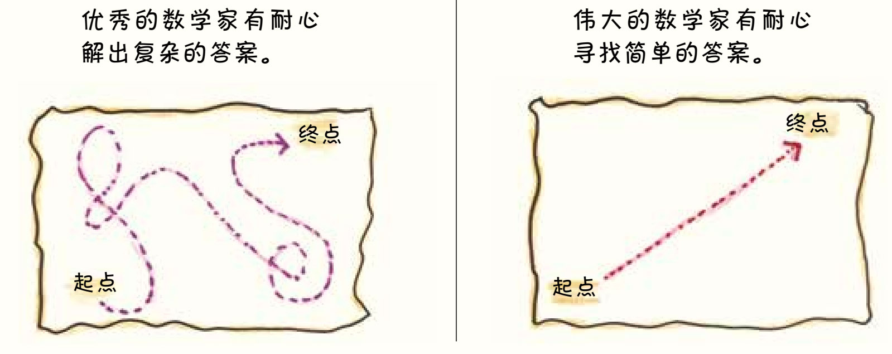
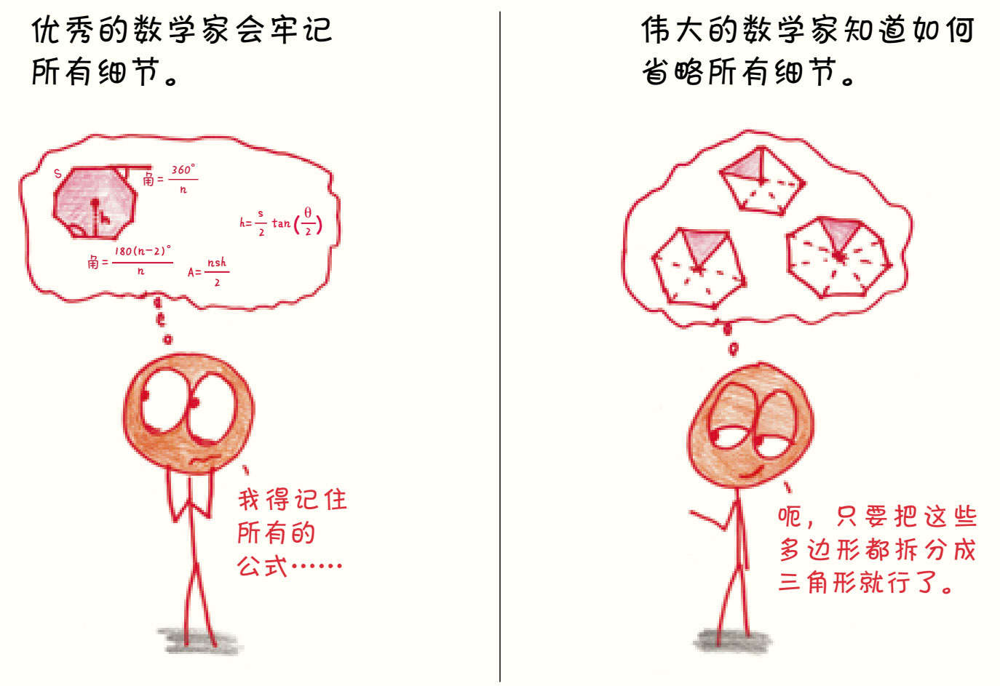
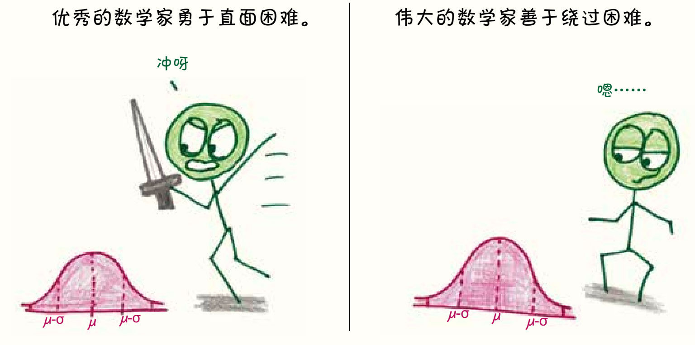
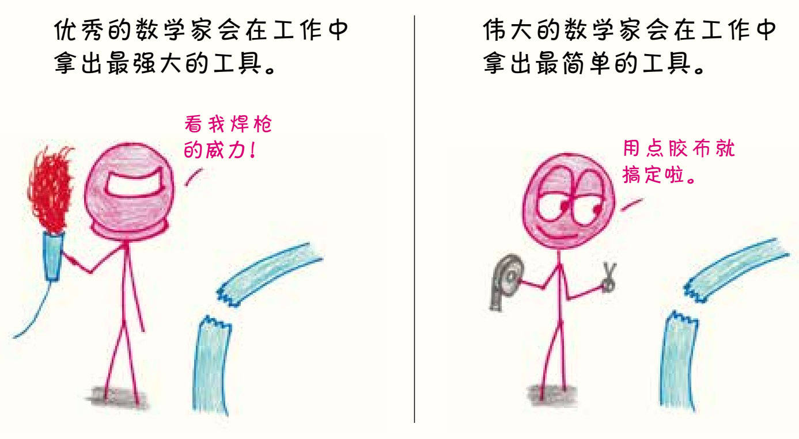
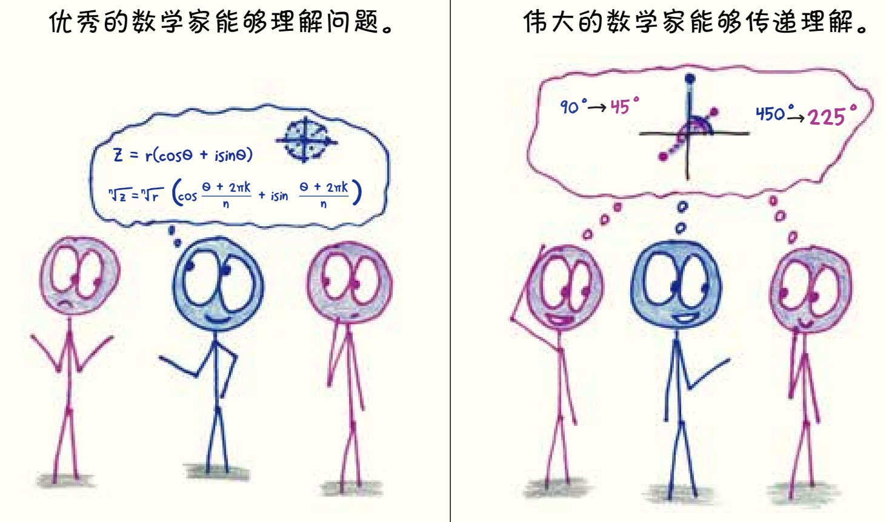
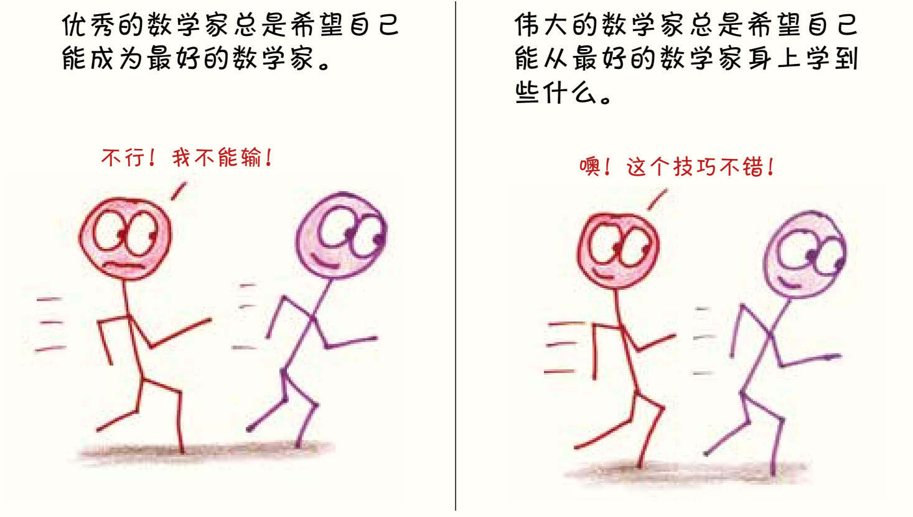
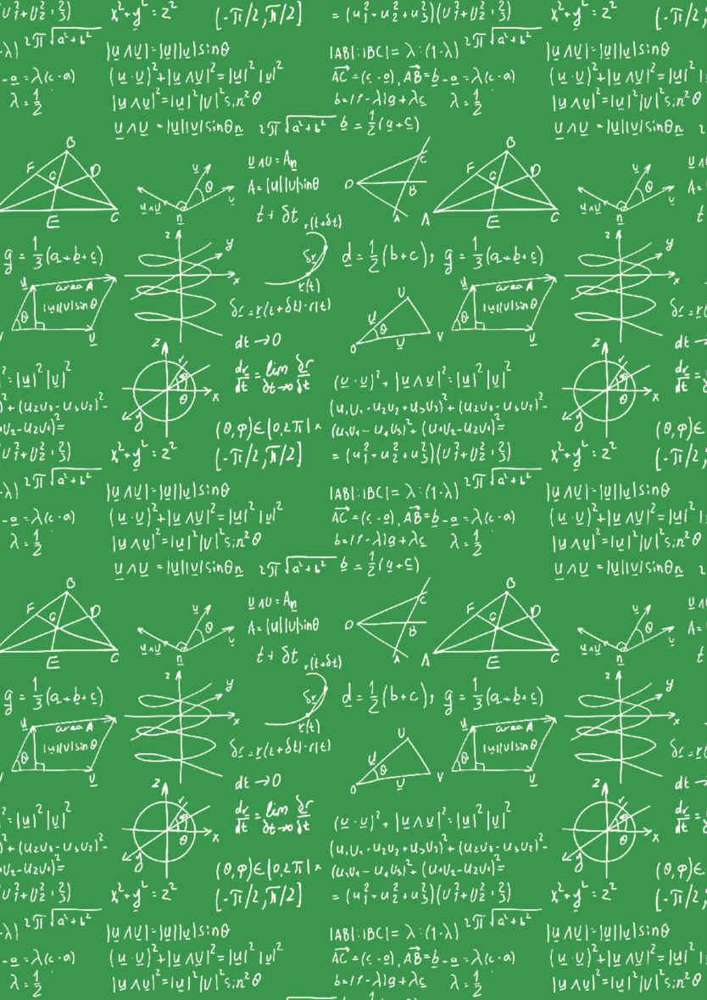

第5章
优秀的数学家和伟大的数学家
辟谣是件有意思的事，只要看看《流言终结者》节目里毫无顾忌的爆炸场面和人们的笑容，我们就不难发现这是一份满意度和成就感相当高的工作。
然而在数学中，我们要做的不只是粉碎谣言，还有纠正错误，这可就麻烦多了，毕竟大众对数学的许多认知并不是完全错误的，只是可能在某些方面存在扭曲、不全面和过度拔高的问题。举例来说，计算在数学中重要吗？当然重要了，但它绝不是最重要的。数学需要关注细节吗？没错，但这并不是数学独有的特点，织毛衣和跑酷也得关注细节。卡尔·高斯是天才吗？毋庸置疑，但是数学最美妙的部分并不来自这位忧郁的德国完美主义者，而是由你我这样的普通人创造的。
在结束第一部分之前，本章会介绍关于“如何像数学家一样思考”的最后一项探索。这样的探索给了我们对常见的数学迷思进行纠错、做出注解的机会。和大多数传言一样，它们都来源于现实生活，也和大多数传言一样，它们都过于“想当然”，忽略了现实的不确定性，缺失了思考。恰恰是这样的思考，使我们成为数学家。
几年前，我还在英国教书，我的学生中有个叫科里的男孩。看到他的时候，我仿佛看到了12岁的本杰明·富兰克林：谈吐温和，文静但善于观察，长着姜黄色的长发，戴着一副圆眼镜——我简直可以想象出他发明双光镜的画面。
科里一丝不苟地对待每项家庭作业，他在不同的章节和课程间建立了清晰的关联，每堂课结束时，他都会非常细心和耐心地收拾好资料和论文，慢条斯理得让人担心他下一节课要迟到。所以，我估计科里会在11月的大考中得满分。
嗯……如果他有时间答完每一道题的话。
交卷铃响的时候，他的试卷还有四分之一是空白的，最后只拿了70多分。第二天，他皱着眉头来找我。“先生，”他说——在英国，即使是一个29岁的愣头青教师也会被这样尊称——“为什么考试要限制时间呢？”

面对这种问题，我觉得还是实话实说为好：“考试有时间限制，并不是因为做题的速度越快越好，而是因为老师们想知道，在没有别人帮助的情况下，学生能独立解决多少问题。”
“那为什么不让我们继续把试卷做完呢？”
“嗯……如果你在我这儿考了一整天的试，其他老师可能就有意见了，你还有科学课、地理课，这些课能让你对现实世界了解更多。”
我从未见过这样的科里：他咬着下唇，眼神黯淡，脸上写满了沮丧。“试卷上的题目我都会做，”他说，“只是没时间了。”
我点点头：“我知道。”
除此之外，我不知自己还能说些什么了。
不管是不是有意为之，学校里的数学总在使劲强调一个明确的信息：速度就是一切。考试有时间限制。提前做完的人会开始在考场上做作业，考试结束时，铃声响起，学生们仿佛刚刚被迫完成了一场以对数为主题的游戏表演。数学就像一场竞赛，想成功就得快。
不得不说，这太愚蠢了。
没错，速度有其不可否认的优势：节省时间。可是在数学中，比节省时间重要得多的是找到那些鞭辟入里的分析见解和轻松优雅的解决方案，这些在1 000千米/时的速度下都是不可能找到的。仔细思考比快速思考学到的数学知识更多，就像在学植物学时，停下来认真研究一棵草一定比在麦田里狂奔收获更多。

科里早就明白了这个道理，但愿像我这样的老师1都不要违心地说服他、改变他。
我的太太是位研究数学的学者，她和我说过数学中一个有趣的发展模式。
你可能会不解——为什么这种轨迹会成为数学研究发展的普遍模式呢？
这么说吧，假设我们要去的目的地叫作“真理”，第一次找到它时，我们通常经历了百转千回，才找到一条艰难曲折的道路。值得肯定的是，

走完这条崎岖的小道很需要耐心。但更需要耐心的还在后面。在到达目的地之后，我们还需要保持思考的耐心。只有继续思考，我们才能不断舍弃多余的弯路，筛选出必须保留的步骤。最后，长达120页的证明也许就能精简到10页了。
1920年以前，在所有的数学分支中，最枯燥乏味的可能就是代数了。2做代数题就像陷进充满琐碎细节的沼泽，或是进入充满技术细节的荆棘丛。这个学科就是这样和细节密不可分。
直到1921年，数学家艾米·诺特发表了一篇名为《环域理想理论》（“Theory of ideal in Ring Domains”）的论文。3她的同事将这篇论文比喻为“抽象代数学科意识觉醒的一道曙光”。诺特对分析具体的数字问题不太感兴趣，事实上，她甚至将“数字”这个概念都束之高阁，对她来说，对称和结构才是最重要的。多年后，她的另一位同事回忆道：“正是她教会了我们用简单、普适的术语进行思考。她开辟了一条发现代数规律的路，这些规律在过去是非常模糊的。”
对于优秀的数学家来说，掌握详尽的细节是必要的，而要成为伟大的数学家，则必须超越这些细节。
对诺特而言，抽象不仅是一种思维习惯，还是一种生活方式。她的同事说：“她在思考问题时，经常会说回自己的母语——德语。”她爱好徒步，有时会在星期六下午带学生去远足。在路上时，她常因为专注于对数学的讨论忘了看路，学生们还得保护她。4
是的，伟大的数学家不太在意人行横道和车流这种琐事，他们的注意力集中在更重要的事情上。
1998年，西尔维亚·瑟法蒂（Sylvia Serfaty）5对涡流随时间的变化方

式产生了兴趣，还写了一本相关的书——《金茨堡-朗道磁场模型中的涡旋现象》（Vortices in the Magnetic Ginzburg-Landau Model）——却发现自己被这个难题困住了。
她后来说：“其实很多优秀的研究都是从最简单、最基础的事物起步的，数学的进展往往来自对典型事例的（新）认知，这些典型事例就是同类问题中最基本的例子，而且通常计算起来很简单，只是没人想过要从这个角度思考。”
遇到问题时，你可以从正门攻打城堡，与防御部队短兵相接。你也可以试着加深对城堡本身的认识，这样也许能发现不堪一击的另一个入口。
数学家亚历山大·格罗滕迪克用另一个比喻说明了这个观点：我们可以把问题想象成让人垂涎的榛果，营养美味的果肉被坚硬的外壳包裹着，我们要怎样才能吃到果肉呢？6
有两种方法。第一种方法是用锤子和凿子使劲敲，把榛果的外壳敲碎。这是可行的，但非常粗暴，也非常费劲。我们也可以试试第二种办法，把榛果泡在水里，就像格罗滕迪克说的那样：“可以用手搓一搓，让水更快地渗入果壳，或者放在那儿不管，过段时间再来看看。几周或者几个月后，时机成熟，你用手轻轻一压，原本坚硬的榛果就会像熟透的鳄梨一样打开了。”
十多年来，瑟法蒂和同事就这样把这个“榛果”泡在水里，断断续续地研究着。2015年，她终于找到了合适的进攻角度，花了几个月的时间就把问题解决了。

每个数学领域都有一座圣杯。对许多统计学家来说，他们的圣杯就是高斯相关不等式（Gaussian correlation inequality）7。
宾夕法尼亚州立大学统计学家唐纳德·理查兹（Donald Richards）说：“我认识的一些人已经针对这个问题研究了40年，我自己研究了30年。”学者们前赴后继地尝试，有的人计算了数百页，有的人采用了复杂的几何框架，有的人结合了概率论分析，但还是没人得到圣杯。甚至有人开始怀疑高斯相关不等式是错的，这个圣杯不过是个神话。
2014年的一天，理查兹收到了一封邮件，发件人是一位德国的退休职员托马斯·罗伊恩（Thomas Royen）。邮件的附件是数学中非常罕见的Microsoft Word文档，因为几乎所有数学研究者平时用的都是LaTeX程序。这位堪称外行的前制药公司员工怎么会主动来联系一个统计领域的顶尖研究人员呢？
听起来不可思议，但事情就这样发生了。这名退休职员证明了高斯相关不等式，他用的论证和公式非常简单，随便找一个研究生都能看明白。罗伊恩说，这个证明过程是在他刷牙时突然冒出来的。
理查兹说：“我只看了一眼，就知道问题已经解决了。”对于自己没能想到这么简单的论证方法，他在惭愧之余有些沮丧，但仍很开心：“我时常在想，如果能在有生之年看到它被论证出来就好了。真的，我很高兴等到了这一天。”
罗伊恩的故事和一位深受爱戴的物理老师8教我的道理不谋而合：“杀鸡焉用宰牛刀。”对数学家来说，克制自己才能优雅地解决问题。
2010年11月的一天，23岁的我在加利福尼亚州的奥克兰市教书。那天我花了一整个上午，用了无数种方法，在三角学课上向学生讲解棣莫弗定理（de Moivre's theorem），但他们还是不能理解。
“好吧，从头再来一遍！”我讲得口干舌燥、汗流浃背，“现在，你们要把这个数变为n次方，对吧？你可以放心地把角度增加2 kπ/n，因为Zoombinis中的其他fraggle会把fleen退回去。你们明白了吗？”
“停停停！”学生们捂着耳朵大叫，“别说了！你越说越难懂！”
这时，一个叫维亚内的学生9举起手：“我能说说我的理解吗？我也不确定对不对。”
“请便，”无计可施的我叹了口气，“别客气。”
“好的，我们要把这个角对半分开，对吗？ ”
喧闹的教室安静了下来。
“其实一个角加上360°就会回到同一个地方，就像90°和450°实际上是一样的，只是450°多转了一整圈，对不对？”
学生们挺直了背，认真地看着维亚内。
“我们现在把这个角对半分开，角的大小就变成原来的一半了，刚才的多转的360°就变成了多转了180°，最后就等于停留在和最初方向完全相反的位置。”

我看到其他学生都露出了豁然开朗的神情，阴沉郁闷的教室一下就明亮了起来。
维亚内总结道：“因为出现了一个反方向的角，所以就有两个解了。老师，我说得对吗？”
我陷入了思考，整个教室的学生都一脸期待地等着我的回答，直到我点了点头：“是的，说得真好。”
全场爆发出热烈的掌声，维亚内迎着大家的欢呼，一边与同学们击掌一边朝座位走回去。说实话，我也能看出她讲解方法的优越性。我一直在试图逆向解释这个定理，想要同时覆盖n的所有取值情况，但维亚内把问题转了个方向，只考虑n=2的情况，就大大简化了问题。
那些伟大的数学家之所以能在历史的长河中留下印记，不仅是因为他们才智非凡，还因为他们开辟了他人可以追随的道路。欧几里得把自己的见解整理成一本空前绝后的教科书；康托尔把自己对无限的新理解提炼成简洁易懂的论点；埃利亚斯·施泰因（Elias Stein）指导了一代代的调和分析学家，一些和他一样伟大的数学家也拜他为师。
维亚内清楚地讲解了棣莫弗定理，并不是因为她比我更了解这个定理，而是她能把知识转化成条理清晰的语言，而我笨拙的口才却无法表达我的思维，于是我的思维只能被禁锢在大脑之中。一个数学家如果无法表达自己的思想，就会和那天的我一样成为一座思想永远无法到达彼岸的孤岛；而一个可以与人分享真理的数学家，则会在充满感恩的人群中像英雄般受到热烈欢迎。
你可能没听说过吴宝珠（Ngô Bàu Châu）。除非某天你实在无聊，把每一届菲尔兹奖（Fields Medal，数学界最负盛名的奖项）得主的名字都背了下来；或者，如果你来自越南，那你肯定知道吴宝珠，他在越南可是家喻户晓的名人。
［顺便说一句，我要为越南欢呼。美国最接近数学家名人的是威尔·亨汀（Will Hunting）——甚至都算不上马特·达蒙扮演过的最著名的角色。］
吴宝珠从小就争强好胜，在学校时就一直追求第一，而他也的确出类拔萃。他在国际数学奥林匹克竞赛中接连夺得金牌，成为学校的骄傲，同龄人对他羡慕不已，他甚至被称为越南数学界的西蒙·拜尔斯。
但是上了大学后，生活却给他带来了一种痛苦，那感觉就像身陷流沙，缓缓下沉一般，因为他逐渐意识到自己其实并不理解正在学习的数学。他回忆说：“教授都认为我非常优秀，因为我作业做得很好，考试分数也高，可我却觉得自己什么都不懂。”过往的成就对他而言，就像一个空心的球体，球体的外壳是脆弱得不堪一击的赞美和荣誉，一旦破碎，就会暴露出里面可怕的真空。
吴宝珠的想法从此出现了转变，他不再竭力追求成为第一，而是开始向那些伟大的数学家学习。
他把这些变化归功于自己的博士生导师热拉尔·劳蒙（Gérard Laumon）。“我的导师是世界上最好的导师之一，”吴宝珠说，“我每周都去他的办公室，他会和我一起读一两页书。”他们一行一行、一个方程一个方程地仔细读，直到把它们完全理解透。
吴宝珠很快加入了著名的“朗兰兹纲领”（Langlands program）项目。这个项目横贯了现代数学的几块大陆，是连接数学各个遥远分支的宏大愿景，吸引了好几代像吴宝珠这样雄心勃勃的数学家。在朗兰兹纲领中，吴宝珠被一个特别棘手的问题吸引了——证明“基本引理”。
你可能会问，竞争激烈的数学奥运会又要开始了吗？数学家是不是你追我赶，争先恐后地想证明这个问题？
吴宝珠说，不是这样的。
“同行帮了我很多忙，”他说，“很多人都真诚地鼓励我挑战这个问题，我经常向他们征求意见，他们给了我很好的建议。这个项目是开放的，我没觉得有竞争。”10在合作伙伴的帮助下，吴宝珠证明了基本引理，正是这项研究让他获得了菲尔兹奖。
作为一位杰出的学者，吴宝珠的经历没有太多跌宕起伏，却是令人愉悦的好故事。有些在学校的竞争氛围中成长的人曾经过分关注排名，不停地和同行比较，没完没了地追求奖项，但现在他们发现，既然进入了学术这个没有终点也没有输赢的无限世界，就该拿出全新的态度。就这样，那些曾经的竞争对手逐渐成了合作伙伴。
